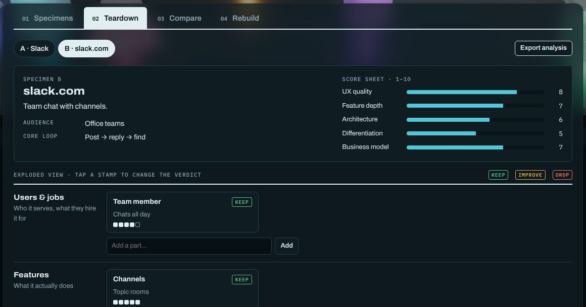
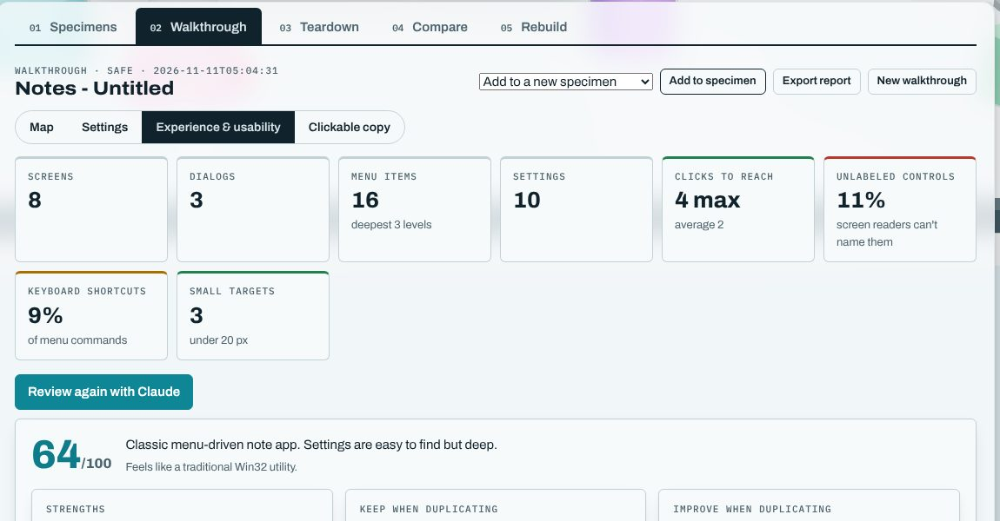

App Lab for Windows
Take apps apart, walk through their menus and settings, and rebuild the best parts. The desktop app reads installed apps in one click, scans any folder, fetches websites and drives other apps to map them. The package builds signed installers with the Cydcor code-signing certificate.
Download
d1b2ebfe4d9daad1ef67814789091f273184f78b41f07d69887df8af67f69da3This is the build kit, not a finished installer: Windows installers can only be signed where the Cydcor certificate lives. On that PC, double-click BUILD APP LAB.cmd and the signed installers appear in a few minutes.


Make the signed Windows installers
- Unzip
app-lab-desktop.zipon a Windows 10/11 PC that has the Cydcor code-signing certificate, for example toC:\AppLab. A network drive works too: the build runs from a local copy and puts the installers back on the share. If the certificate is on a USB token, plug it in. - Double-click
BUILD APP LAB.cmd. The first time, it installs Python 3.13, Inno Setup and the Windows signing tools if they're missing, then builds and self-tests the app (5 to 10 minutes). - If Windows asks to allow changes, click Yes. A second window signs everything; press Enter when it says it's done.
- The
Outputfolder opens withAppLab-1.8.1-release.zip: both signed installers, checksums, the public certificate andDEPLOY.md, ready to share.
Prefer to run it without building? In the AppLab folder: py -3.13 -m venv .venv, then .venv\Scripts\pip install -r requirements.txt, .venv\Scripts\python tools\prepare_web.py and .venv\Scripts\python run.py.
Ways to sign
Set mode in signing.json. No secrets go in that file.
Every route timestamps the signatures (SHA-256, RFC 3161) and verifies them before packaging, so installers stay valid after the certificate expires.
What the build produces
AppLab-Setup-1.8.1-PerUser.exefor employees, no admin rights neededAppLab-Setup-1.8.1.exefor IT and Intune, all users, silent installAppLab-1.8.1-release.zipboth installers, checksums, certificate and notes in one fileSHA256SUMS.txtchecksums of every installerAppLab-publisher.cerpublic signing certificate, for allow-listingDEPLOY.mdsilent-install, uninstall and Intune commands
What's in the desktop app
- Sources
- Known apps, installed apps read straight from Windows, any folder or .exe, websites by address, or by hand.
- Walkthrough
- Maps a running app's menus, screens and settings in Safe auto, Full auto or Record mode, with a usability review and a clickable copy.
- Claude
- Teardowns, rebuilds and reviews through your organization's Anthropic API key, stored encrypted per Windows user.
- Privacy
- Scans and walkthroughs stay on the PC; only a specimen's notes go to Claude, when you ask.
- Needs
- Windows 10/11, 64-bit, with the Edge WebView2 runtime (built in). Building needs Python 3.11 to 3.13.